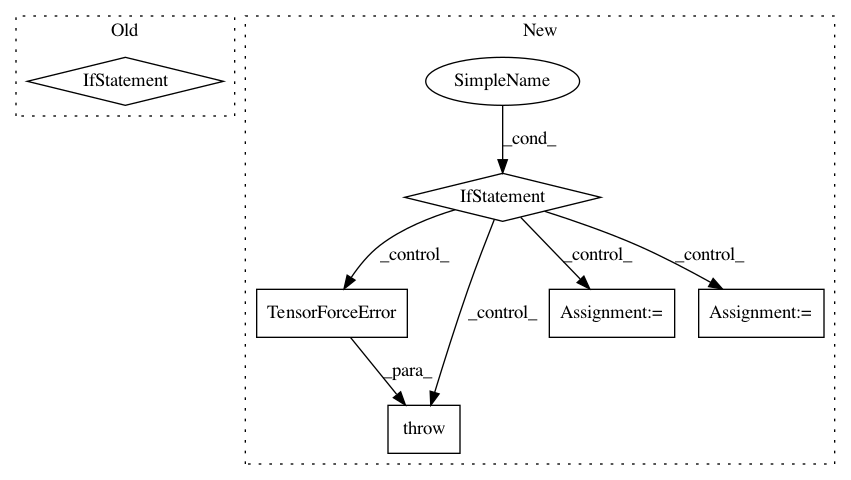

82a059d89d5f5ebc77c6a3f0b8ac4072a3979104,tensorforce/core/networks/layer.py,Nonlinearity,__init__,#Nonlinearity#Any#Any#Any#Any#Any#Any#Any#,201
Before Change
if alpha is not None:
self.alpha = float(alpha)
if beta == "learn":
self.beta_learn = True
self.beta = None
else:
self.beta = tf.constant(float(beta), dtype=util.tf_dtype("float"))
def tf_apply(self, x, update):
if self.beta_learn:
self.beta = tf.get_variable(
name="beta",
After Change
self.window = (1, window[0], window[1], 1)
else:
raise TensorForceError("Invalid window {} for pool2d layer, must be of size 2".format(window))
if isinstance(stride, int):
self.stride = (1, stride, stride, 1)
elif len(window) == 2:
self.stride = (1, stride[0], stride[1], 1)
else:
raise TensorForceError("Invalid stride {} for pool2d layer, must be of size 2".format(stride))
self.padding = padding
super(Pool2d, self).__init__(named_tensors=named_tensors, scope=scope, summary_labels=summary_labels)
def tf_apply(self, x, update):
In pattern: SUPERPATTERN
Frequency: 3
Non-data size: 6
Instances
Project Name: reinforceio/tensorforce
Commit Name: 82a059d89d5f5ebc77c6a3f0b8ac4072a3979104
Time: 2018-08-03
Author: alexkuhnle@t-online.de
File Name: tensorforce/core/networks/layer.py
Class Name: Nonlinearity
Method Name: __init__
Project Name: reinforceio/tensorforce
Commit Name: 88caabc1afc64121fa68b91e9b6c6515d566c8ec
Time: 2017-06-11
Author: mi.schaarschmidt@gmail.com
File Name: examples/lab_main.py
Class Name:
Method Name: main
Project Name: reinforceio/tensorforce
Commit Name: 82a059d89d5f5ebc77c6a3f0b8ac4072a3979104
Time: 2018-08-03
Author: alexkuhnle@t-online.de
File Name: tensorforce/core/networks/layer.py
Class Name: Conv2d
Method Name: __init__